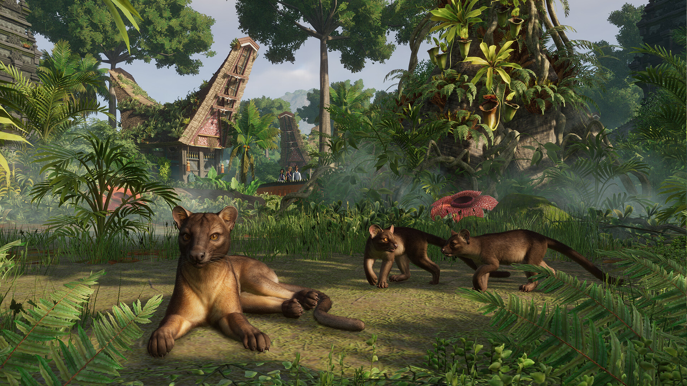
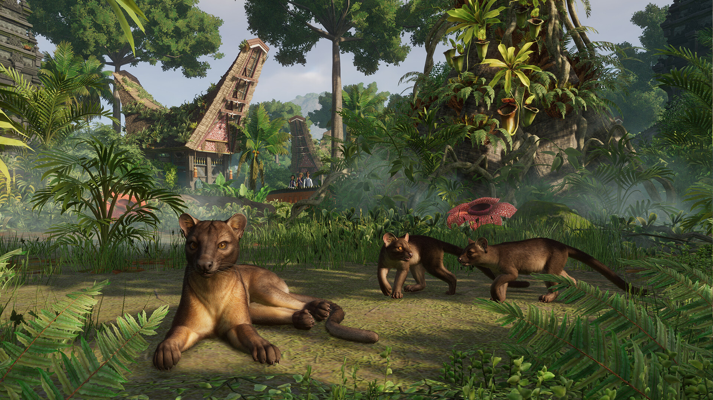

Tropical Pack
Data wydania: 4 kwietnia 2023
Cena pakietu: 35.99 zł
Oficjalny zwiastun DLC Tropical Pack
Ciepło powitajmy Planet Zoo: Pakiet tropikalny! Adoptuj pięć niesamowitych nowych zwierząt, które zamieszkują tropikalne lasy deszczowe całego świata, w tym Afrykę, Azję Południowo-Wschodnią i Amerykę Południową, i dobrze się nimi
zaopiekuj. Niektóre z tych gatunków żyją wysoko w koronach drzew, inne zamieszkują żyzne brzegi rzek, ale wszystkie najlepiej czują się w biomach dżunglowych. Ponadto możesz jeszcze bardziej rozbudować swoje wymarzone zoo dzięki
ponad 200 szczegółowo zaprojektowanym, zupełnie nowym elementom scenerii czerpiącym z piękna tradycyjnej architektury Indonezji. Przejdź zupełnie nowy i ekscytujący scenariusz kampanii osadzony w zielonym krajobrazie tego
kraju.
Galeria zdjęć


 



O tym DLC
Poznaj nowe zwierzęta z ekspozycji: fossę, gibbona lar, dzikana rzecznego, warana paskowanego oraz leniwca pstrego! Zajrzyj wtę zieloną gęstwinę i przekonaj się, co sprawia, że te zachwycające tropikalne gatunki są tak fascynujące. Wsłuchaj się w głośne nawoływania gibbona lar, które docierają aż na drugą stronę zoo; zachwyć się tym, jak głęboko potrafi pływać waran paskowany; poobserwuj dzikany rzeczne z radością taplające się w błocie; zobacz z bliska, jak zachowuje się fossa – cichy drapieżnik z Madagaskaru, ostatnie ogniwo tamtejszego łańcucha pokarmowego; i zachęć gości do podziwiania uroczo powolnego leniwca pstrego, który nieśpiesznie pokonuje swoją ekspozycję do zwiedzania.
Ponad 200 elementów scenerii
Wzbogać swoje zoo o mnóstwo nowych i atrakcyjnych elementów scenerii, które są inspirowane architekturą i tradycjami Azji Południowo-Wschodniej. Buduj wielopoziomowe świątynie w stylu balijskim, których sylwetki będą prezentować się zniewalająco na tle bujnej dżungli. Planuj spokojne wioski inspirowane tradycyjnymi domkami tongkonan i składaj nowe wieloczęściowe posągi zwierząt z licznymi detalami. Oprócz pięknej kolekcji wyposażenia, takiego jak stoły, ławki, parasole czy draperie, w tym dodatku znajdziesz też nowe egzotyczne rośliny z Azji Południowo-Wschodniej, w tym bukietnicę, Nepenthes attenboroughii i drynarię! Dodaj te wszystkie piękne elementy i gadżety do istniejącego zoo lub wykorzystaj je do budowy nowego tropikalnego raju zupełnie od podstaw.
Ścieżka dźwiękowa
Oryginalna ścieżka dźwiękowa złożona z 4 wyjątkowych utworów. Możesz słuchać tej wspaniałej muzyki, kiedy tylko zechcesz.
Posłuchaj Tropical Pack
Nowy scenariusz Kampanii
Sprawdź się w zupełnie nowym scenariuszu kampanii osadzonym w spektakularnym krajobrazie Bali w Indonezji. Ponownie spotkaj się z Tiffany, wysoko postawioną bogaczką, która ma wielkie ambicje, ale brak jej umiejętności prowadzenia zoo, i pomóż jej w zarządzaniu tropikalnym ogrodem zoologicznym, który właśnie dostała od ojca w prezencie. Ale uważaj na tajemniczą postać z przeszłości, która niespodziewanie się tam pojawi! Przejmij stery w zoo, zarządzaj nim i adoptuj mnóstwo wspaniałych zwierząt, by przekonać się, czy potrafisz zdobyć tak wysokie noty jak tutejsze temperatury powietrza. Atmosfera może i jest gorąca, ale musisz zachować zimną krew.